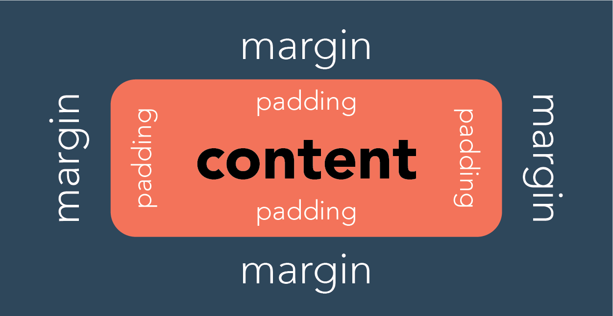
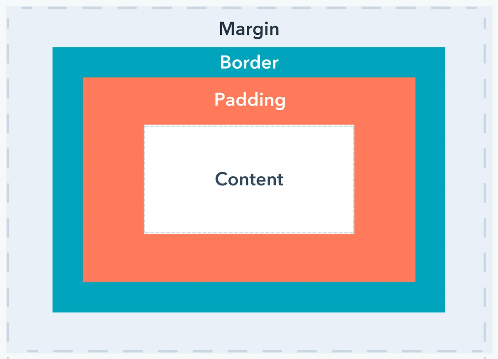

What is the difference between Margin, Border, and Padding?
What is the difference between Margin, Border, and Padding?
What is the difference between Margin, Border, and Padding?
What is the difference between Margin, Border, and Padding?


Margin
A margin is the space around an element's border, while padding is the space between an element's border and the element's content.
Put another way, the margin property controls the space outside an element, and the padding property controls the space inside an element.
Example!
How to make margin for all sides in one line?
"margin: 10px 50px 20px 0;" makes margin top 10px, right 50px, bottom 20px, and left 0. for mor detail.Border
The border shorthand CSS property sets an element's border. It sets the values of border-width , border-style , and border-color.
Example!
"border: 4mm ridge rgba(211, 220, 50, .6);" can style border in one line. for mor detail.Padding
The CSS padding properties are used to generate space around an element's content, inside of any defined borders.
With CSS, you have full control over the padding. There are properties for setting the padding for each side of an element (top, right, bottom, and left).
Example!
How to set padding?
"padding: 10px 50px 30px 0;" exactly same as margin. for mor detail.